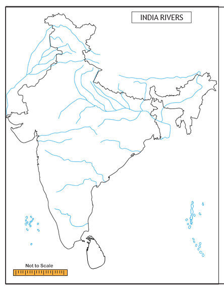

1. What metals were known to the people of Indus Civilization?
a. Copper, bronze, silver, gold, but not iron
b. Copper, silver, iron, but not bronze
c. Copper, gold, iron, but not silver
d. Copper, silver, iron, but not gold
2. Indus Civilisation belonged to
a. old Stone age
b. Medieval stone age
c. new stone age
d. Metal age
3. River valleys are said to be the cradle of civilisation because
a. Soil is very fertile.
b. They experience good climate.
c. They are useful for transportation.
d. Many civilisations flourished on river valleys.
1. Statement: Harappan civilization is said to be an urban civilization.
Reason: It has well planned cities with advanced drainage system.
a. Statement and reason are correct.
b. Statement is wrong.
c. Statement is true, but the reason is wrong.
d. Both statement and reason are wrong.
2. Statement: Harappan civilization belongs to Bronze Age.
Reason: Harappans did not know the use of iron.
a. Statement and reason are correct.
b. Statement is wrong.
c. Statement is correct, but the reason is wrong.
d. Both statement and reason are wrong.
3. Statement: The engineering skill of Harappans was remarkable.
Reason: Building of docks after a careful study of tides, waves and currents.
a. Statement and reason are correct.
b. Statement is wrong.
c. Statement is correct, but the reason is wrong.
d. Both statement and reason are wrong.
4. Which of the following statements about Mohenjo-Daro is correct?
a. gold ornaments were unknown.
b. Houses were made of burnt bricks.
c. Implements were made of iron.
d. Great Bath was made water tight with the layers of natural bitumen
5. Consider the following statements.
1. Uniformity in layout of town, streets, and brick sizes
2. An elaborate and well laid out drainage system
3. Granaries constituted an important part of Harappan Cities
Which of the above statements are correct?
a. 1&2
b. 1&3
c. 2&3
d. all the three
6. Circle the odd one
Oxen, sheep, buffaloes, pigs, horses
7. Find out the wrong pair
a. A S I |
- |
John Marshall |
b. Citadel |
- |
Granaries |
c. Lothal |
- |
Dockyard |
d. Harappan civilization |
- |
River Cauvery |
1. dash is the oldest civilisation.
2. Archaeological Survey of India was founded by dash
3. dash were used to store grains.
4. Group of people form dash
1. Mehergarh is a Neolithic site.
2. Archaeological survey of India is responsible for preservation of cultural monuments in the country.
3. Granaries were used to store grains.
4. The earliest form of writings was developed by Chinese.
Mohenjo-Daro |
- |
raised platform |
Bronze |
- |
red quartz stone |
Citadel |
- |
alloy |
Carnelian |
- |
mound of dead |
1. What are the uses of metal?
2. Make a list of baked and raw foods that we eat.
3. Do we have the practice of worshipping animals and trees?
4. River valleys are cradles of civilisation. Why?
5. Just because a toy move doesn’t mean its modern. What did they use instead of batteries?
6. Dog was the first animal to be tamed. Why?
7. If you were an archaeologist, what will you do?
8. Name any two Indus sites located in the Indian border.
9. In Indus civilisation, which feature you like the most? Why?
10. What instrument is used nowadays to weigh things?
1. What method is used to explore buried buildings nowadays?
2. Why Indus Civilisation is called Bronze Age civilisation?
3. Indus Civilisation is called urban civilisation. Give reasons.
4. Can you point out the special features of their drainage system?
5. What do you know about the Great Bath?
6. How do you know that Indus people traded with other countries?
1. Observe the following features of Indus Civilisation and compare that with the present day.
a. Lamp post
b. Burnt bricks
c. Underground drainage system
d. Weights and measurement
e. Dockyard
2. Agriculture was one of their occupations. How can you prove this? (with the findings)
3. Many potteries and its pieces have been discovered from Indus sites. What do you know from that?
4. A naval dockyard has been discovered in Lothal. What does it convey?
5. Can you guess what happened to the Harappans?
1. Prepare a scrap book. (Containing more information about objects collected from Mohenjo-Daro and Harappa.)
2. You are a young archaeologist working at a site that was once an Indus city. What will you collect?
3. Make flash cards.
(Take square cards and stick picture in one card and the information for the same picture in another card. Circulate among the groups and tell them to match the picture with information.)
4. Draw your imaginary town planning in a chart.
5. Make a model of any one structure of Indus Civilisation using clay, broken pieces of bangles, matchsticks, woolen thread and ice cream sticks.
6. Can you imagine how toys have changed through the ages? Collect toys made of Clay, stone, wood, metal, plastic, fur, electric, electronic.
7. Crossword puzzle.
|
1 |
|
|
|
|
|
8 |
|
|
|
2 |
3 |
|
5 |
|
|
|
|
|
|
|
|
10 |
7 |
|
|
|
|
|
|
|
|
|
4 |
|
|
|
9 |
|
|
|
|
|
|
|
|
|
|
|
6 |
|
|
|
|
|
Top to Bottom
1. Director General of A S I.
2. dash is older than Mohenjo-Daro.
3. This is dash age civilisation.
4. Each house had a dash.
Left to Right
5. Place used to store grains.
6. A dockyard has been found.
7. dash is unknown to Indus people.
8. It is used to make water tight.
Right to Left
9. From this we can get lot of information.
10. This is responsible for research.
Rapid Fire Quiz (Do it in groups)
1. Which crop did Indus people use to make clothes?
2. Which was the first Indus city discovered?
3. Where was Indus Civilisation?
4. Which animal was used to pull carts?
5. Which metal was unknown to Indus people?
6. What was used to make pots?
7. Which is considered the largest civilisation among four ancient civilisations of the world?
1. Making an animal or a pot out of clay.
2. Making terracotta toy with movable limbs.
3. Pot painting (with geometric pattern).
4. Make informational charts and posters.
1. Mark any four Indus sites located within the Indian border.
2. On the river map of India, colour the places where Indus civilisation spread.
3. Mark the following places in the given India map:
a. Mohenjo-Daro
b. Chanhudaro
c. Harappa
d. Mehergarh
e. Lothal

What did Charles Masson see? Answer: dash |
List three things’ people used which we use today? Answer: dash |
What else has been found? Answer: dash |
Can you say three things unknown to Indus people? Answer: dash |
Which metal was unknown to Indus people? Answer: dash |
Which is the oldest civilisation in the world? Answer: dash |
Why dog was the first animal to be tamed? Answer: dash |
Who were the first people to grow cotton? Answer: dash |
Which institution is responsible for archaeological research? Answer: dash |
Was there any river valley civilisation found in Tamil Nadu? Answer: dash |
Name any two Harappan sites which were found in Indian border? Answer: dash |
Can we say the Indus cities as cities of children? Answer: dash |
1. http://www.thenagain.info/webchron/india/harappa.html
2. http://www.archaeologyonline.net/artifact/harappa-mohenjodaro.html